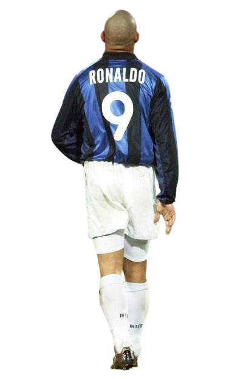
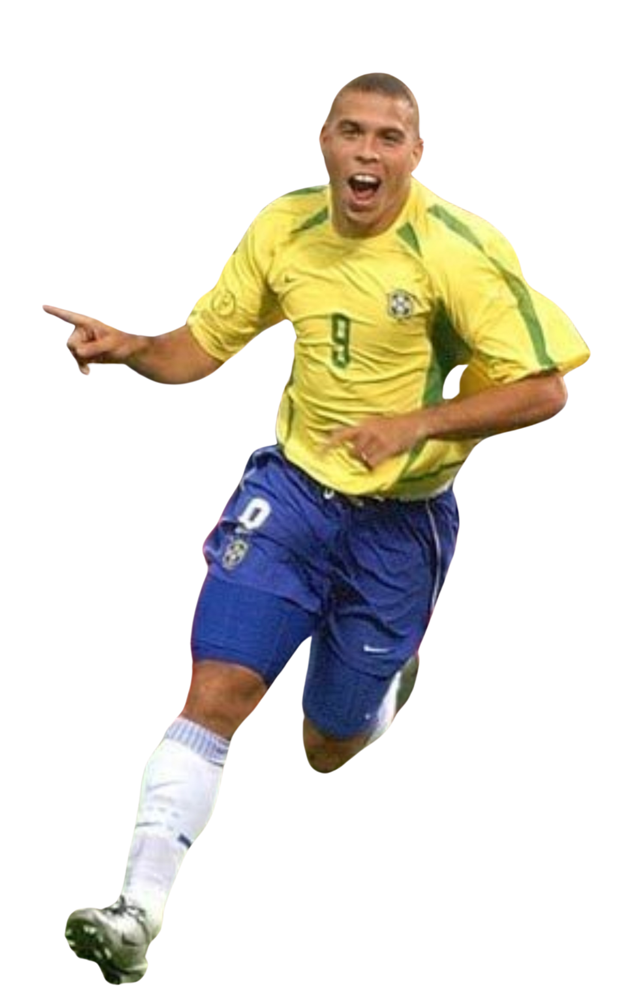

Ronaldo Luís Nazário de Lima, conhecido mundialmente como Ronaldo Fenômeno, nasceu em 22 de setembro
de
1976, no Rio de Janeiro, Brasil. Cresceu em um ambiente modesto em Bento Ribeiro, onde seu talento para
o
futebol logo se destacou. Aos 14 anos, Ronaldo foi descoberto pelo Clube de Futebol Nacional de São
Cristóvão e, em seguida, pelo Cruzeiro, onde começou sua carreira profissional. Sua ascensão meteórica
chamou a atenção do futebol europeu, e em 1994, aos 17 anos, fez sua estreia na Copa do Mundo pela
seleção brasileira, conquistando o título.Sua jornada nos clubes europeus incluiu passagens marcantes
pelo
PSV Eindhoven, Barcelona, Inter de Milão e Real Madrid. Em cada clube, Ronaldo deixou sua marca,
conquistando títulos nacionais e internacionais, além de prêmios individuais, como o FIFA World Player.
Apesar de enfrentar lesões graves ao longo de sua carreira, seu retorno triunfante em 2002, quando
liderou
o Brasil à conquista da Copa do Mundo pela segunda vez, demonstrou sua resiliência e determinação.Após
sua
aposentadoria em 2011, Ronaldo continuou envolvido no mundo do futebol como embaixador, empresário e
proprietário de clubes, além de se dedicar a iniciativas filantrópicas. Sua contribuição para o esporte
e
para a sociedade transcendeu as fronteiras do campo de futebol, deixando um legado duradouro como um dos
maiores jogadores de todos os tempos.
Ronaldo Fenômeno, apesar de sua monumental carreira no futebol, não escapou de desafios e
adversidades. Entre eles, as lesões representaram um dos maiores obstáculos. Em diferentes momentos,
lesões no joelho e problemas musculares ameaçaram sua continuidade nos campos. A mais significativa
ocorreu em 1999, quando uma lesão no joelho o afastou por meses. Esses contratempos físicos exigiram não
apenas reabilitação física, mas também resiliência mental para superar as incertezas e retomar o mais
alto nível.
Além das lesões, Ronaldo enfrentou uma pressão constante da mídia e expectativas imensas. Como uma
das estrelas mais brilhantes do esporte, estava sempre sob os holofotes, sujeito à escrutínio público e
críticas. A intensidade da atenção da mídia afetava sua vida pessoal e profissional, exigindo equilíbrio
emocional e mental para lidar com as demandas.
Questões relacionadas à saúde e ao peso também surgiram ao longo de sua carreira. Seu peso e forma
física eram frequentemente alvo de discussão e crítica, levantando questionamentos sobre seu
comprometimento e dedicação ao esporte. Essas preocupações adicionaram uma camada de desafio extra,
exigindo disciplina e determinação para manter o desempenho em alto nível.
Além disso, Ronaldo enfrentou desafios financeiros e empresariais. Apesar do sucesso como jogador,
teve investimentos malsucedidos e enfrentou problemas financeiros, resultando em processos judiciais e
preocupações sobre sua estabilidade financeira. Gerenciar sua carreira fora dos gramados mostrou-se uma
tarefa complexa e desafiadora.
HISTORIA
FUTEBOL
.png)
O futebol de Ronaldo Fenômeno é uma celebração da genialidade e da potência atlética. Sua carreira foi marcada por momentos de brilho onde sua combinação única de habilidade técnica, velocidade explosiva e força física o destacou como um dos jogadores mais formidáveis de sua geração. Seus dribles desconcertantes eram um espetáculo à parte, deixando defensores perplexos e multidões extasiadas. Além disso, sua precisão cirúrgica na finalização era uma arma letal, capaz de decidir jogos em um piscar de olhos. Seu estilo único e imprevisível inspirou gerações de jogadores e fãs ao redor do mundo, consolidando seu lugar na história do futebol como uma verdadeira lenda.
Ronaldo não era apenas um atacante excepcional, mas também um estrategista astuto dentro de campo. Sua inteligência tática e sua capacidade de ler o jogo eram igualmente impressionantes. Ele tinha um talento especial para encontrar espaços na defesa adversária e explorá-los com maestria, muitas vezes surpreendendo seus oponentes com jogadas geniais. Sua adaptabilidade também era notável; ele conseguia se ajustar rapidamente às mudanças no ritmo da partida e às estratégias dos adversários, tornando-se ainda mais perigoso à medida que o jogo progredia.
A influência de Ronaldo não se limitava apenas ao campo de jogo. Sua personalidade cativante e sua paixão pelo futebol conquistaram o coração de milhões de fãs ao redor do mundo. Ele era um verdadeiro embaixador do esporte, inspirando não apenas com sua habilidade técnica, mas também com sua humildade e dedicação. Sua popularidade transcendia fronteiras, unindo pessoas de diferentes origens em sua admiração por seu talento excepcional e sua conduta exemplar dentro e fora de campo.
Durante sua carreira, Ronaldo enfrentou inúmeras adversidades, incluindo lesões graves que ameaçaram sua trajetória no futebol. No entanto, sua resiliência e determinação inabaláveis o ajudaram a superar esses desafios e retornar ainda mais forte. Sua capacidade de se recuperar e continuar brilhando nos momentos mais difíceis inspirou admiradores em todo o mundo, transformando-o em um verdadeiro ícone de perseverança e superação.
Ao longo dos anos, Ronaldo deixou um legado duradouro no mundo do futebol. Sua influência pode ser vista não apenas nas estatísticas impressionantes que acumulou ao longo de sua carreira, mas também na maneira como ele mudou o jogo com sua abordagem inovadora e seu estilo único. Sua marca indelével na história do esporte é uma homenagem ao seu talento excepcional e ao impacto duradouro que ele teve no mundo do futebol. Ronaldo Fenômeno não apenas dominou o jogo, mas o elevou a novos patamares de excelência e inspiração.
HABILIDADES
.png)
Ronaldo Fenômeno foi um verdadeiro virtuoso da bola, cujas habilidades transcendiam as limitações do campo de jogo. Sua destreza técnica era incomparável, manifestando-se em dribles desconcertantes, rápidas mudanças de direção e uma capacidade extraordinária de controlar a bola mesmo em situações de alta pressão. Seu domínio da arte de driblar era tão exímio que deixava defensores perplexos, incapazes de conter sua genialidade.
Além de sua habilidade dribladora, Ronaldo possuía uma velocidade explosiva que o tornava uma ameaça constante para qualquer defesa adversária. Sua capacidade de acelerar em direção ao gol com rapidez e agilidade o tornava praticamente imparável quando estava em posse da bola. Sua combinação de força física e agilidade o permitia superar qualquer obstáculo que surgisse em seu caminho em direção ao gol.
O talento de Ronaldo não se limitava apenas à sua capacidade de driblar e correr; ele também era um finalizador supremo. Sua precisão cirúrgica ao chutar a gol, seja com potência ou com colocação, o tornava uma ameaça letal dentro da área. Ele tinha o instinto assassino de um verdadeiro artilheiro, sempre encontrando maneiras criativas de superar os goleiros e balançar as redes.
Em resumo, Ronaldo Fenômeno era um mestre do jogo, cujas habilidades técnicas e físicas o elevavam a um patamar único no mundo do futebol. Seja driblando com graciosidade, correndo com velocidade ou finalizando com precisão letal, ele era uma força da natureza que deixava uma marca indelével em cada partida em que jogava. Sua genialidade inspirou gerações de jogadores e continuará a ser reverenciada como uma das maiores lendas do esporte.
Além de suas habilidades individuais, Ronaldo também possuía uma inteligência tática excepcional que complementava seu talento técnico. Ele tinha uma capacidade única de ler o jogo e antecipar movimentos tanto defensivos quanto ofensivos, permitindo-lhe tomar decisões rápidas e precisas em campo. Sua visão de jogo e sua capacidade de criar oportunidades para si mesmo e para seus companheiros de equipe eram verdadeiramente notáveis, elevando o desempenho de toda a equipe quando ele estava em campo. Ronaldo não apenas brilhava individualmente, mas também era um líder inspirador que sabia como influenciar positivamente o jogo em benefício de sua equipe.
LEGADO

Ronaldo Fenômeno deixou um legado de recordes que ecoam através das eras do futebol. Sua impressionante carreira foi marcada por uma série de feitos extraordinários que o destacaram como um dos maiores jogadores de todos os tempos. Entre seus recordes mais notáveis está o título de maior artilheiro da história das Copas do Mundo, um feito alcançado em 2006, quando ultrapassou o lendário Gerd Müller. Com seus 15 gols em Copas do Mundo, Ronaldo estabeleceu um padrão de excelência que ainda é reverenciado pelos amantes do futebol em todo o mundo.
Além de seus feitos em competições internacionais, Ronaldo também brilhou nos palcos domésticos, estabelecendo recordes impressionantes em suas passagens por clubes de elite. Seu desempenho espetacular no Barcelona, onde marcou 47 gols em uma única temporada, é um dos muitos exemplos de sua habilidade incomparável em encontrar as redes. Esse recorde de gols em uma única temporada na liga espanhola só serviu para solidificar sua posição como um dos maiores goleadores da história do futebol mundial.
Ronaldo também foi o primeiro jogador a conquistar o prêmio FIFA World Player of the Year por três vezes, demonstrando sua consistência e excelência ao longo de sua carreira. Seus talentos inigualáveis foram reconhecidos e celebrados pela comunidade internacional do futebol, consagrando-o como um verdadeiro ícone do esporte. Esse domínio absoluto do cenário mundial o colocou em um patamar exclusivo, onde sua genialidade era reconhecida por colegas de profissão, treinadores e torcedores em todo o mundo.
Outro feito notável de Ronaldo foi sua incrível capacidade de se recuperar de lesões graves e retornar ao mais alto nível do esporte. Após sofrer uma série de lesões que ameaçaram sua carreira, ele mostrou uma resiliência extraordinária, perseverando através da adversidade e emergindo ainda mais forte do que antes. Sua determinação inabalável e sua paixão pelo jogo o ajudaram a superar obstáculos que teriam desanimado muitos outros jogadores, tornando sua história de superação ainda mais inspiradora.
Em suma, os recordes de Ronaldo Fenômeno são testemunhos do seu talento incomparável, sua dedicação incansável e sua influência duradoura no mundo do futebol. Ele não apenas quebrou barreiras e estabeleceu padrões elevados, mas também inspirou uma geração de jogadores a sonhar grande e a perseguir a grandeza com fervor e determinação. Sua marca indelével na história do esporte é uma homenagem ao seu legado duradouro e ao impacto profundo que teve no mundo do futebol.
Ronaldo Fenômeno deixou um legado de recordes que ecoam através das eras do futebol. Sua impressionante carreira foi marcada por uma série de feitos extraordinários que o destacaram como um dos maiores jogadores de todos os tempos. Entre seus recordes mais notáveis está o título de maior artilheiro da história das Copas do Mundo, um feito alcançado em 2006, quando ultrapassou o lendário Gerd Müller. Com seus 15 gols em Copas do Mundo, Ronaldo estabeleceu um padrão de excelência que ainda é reverenciado pelos amantes do futebol em todo o mundo.
Além de seus feitos em competições internacionais, Ronaldo também brilhou nos palcos domésticos, estabelecendo recordes impressionantes em suas passagens por clubes de elite. Seu desempenho espetacular no Barcelona, onde marcou 47 gols em uma única temporada, é um dos muitos exemplos de sua habilidade incomparável em encontrar as redes. Esse recorde de gols em uma única temporada na liga espanhola só serviu para solidificar sua posição como um dos maiores goleadores da história do futebol mundial.
Ronaldo também foi o primeiro jogador a conquistar o prêmio FIFA World Player of the Year por três vezes, demonstrando sua consistência e excelência ao longo de sua carreira. Seus talentos inigualáveis foram reconhecidos e celebrados pela comunidade internacional do futebol, consagrando-o como um verdadeiro ícone do esporte. Esse domínio absoluto do cenário mundial o colocou em um patamar exclusivo, onde sua genialidade era reconhecida por colegas de profissão, treinadores e torcedores em todo o mundo.
Outro feito notável de Ronaldo foi sua incrível capacidade de se recuperar de lesões graves e retornar ao mais alto nível do esporte. Após sofrer uma série de lesões que ameaçaram sua carreira, ele mostrou uma resiliência extraordinária, perseverando através da adversidade e emergindo ainda mais forte do que antes. Sua determinação inabalável e sua paixão pelo jogo o ajudaram a superar obstáculos que teriam desanimado muitos outros jogadores, tornando sua história de superação ainda mais inspiradora.
Em suma, os recordes de Ronaldo Fenômeno são testemunhos do seu talento incomparável, sua dedicação incansável e sua influência duradoura no mundo do futebol. Ele não apenas quebrou barreiras e estabeleceu padrões elevados, mas também inspirou uma geração de jogadores a sonhar grande e a perseguir a grandeza com fervor e determinação. Sua marca indelével na história do esporte é uma homenagem ao seu legado duradouro e ao impacto profundo que teve no mundo do futebol.
RECORDES
.png)
Ronaldo Fenômeno é um nome que ressoa na história do futebol não apenas por seu talento inigualável, mas também por seus impressionantes recordes. Um dos seus feitos mais notáveis foi estabelecer o recorde de maior artilheiro da história das Copas do Mundo. Com seus 15 gols marcados em Copas do Mundo, Ronaldo superou lendas do esporte, solidificando seu lugar como um dos maiores goleadores de todos os tempos em competições internacionais. Seus gols não eram apenas números, eram momentos de genialidade que cativavam o mundo e ecoavam através das eras do futebol.
Além de seus feitos em competições de seleções, Ronaldo também deixou sua marca nos palcos domésticos. Em suas passagens por clubes renomados como Barcelona, Inter de Milão e Real Madrid, ele estabeleceu recordes impressionantes. Um dos mais notáveis foi o recorde de gols em uma única temporada na liga espanhola, onde marcou 47 gols em uma temporada pelo Barcelona. Esse feito não apenas destacou sua habilidade excepcional de finalização, mas também solidificou sua posição como um dos maiores atacantes da história do futebol europeu.
Além de suas conquistas individuais, Ronaldo também foi agraciado com o prêmio FIFA World Player of the Year por três vezes, um feito que reflete sua consistência e excelência ao longo de sua carreira. Sua habilidade inigualável, sua presença dominante e seu impacto duradouro no esporte foram reconhecidos e celebrados pela comunidade internacional do futebol. Ele não apenas alcançou o topo do mundo do futebol, mas também permaneceu lá, deixando um legado de grandeza que continua a inspirar jogadores e fãs em todo o mundo.
Outro aspecto notável de sua carreira foram suas impressionantes recuperações de lesões graves. Ronaldo enfrentou desafios físicos que poderiam ter encerrado a carreira de muitos jogadores, mas ele mostrou uma determinação e resiliência extraordinárias. Sua capacidade de superar adversidades e retornar ao mais alto nível do esporte é uma prova de sua mentalidade imbatível e de sua paixão inabalável pelo jogo.
Em suma, os recordes de Ronaldo Fenômeno não são apenas marcas numéricas, mas testemunhos de sua grandeza como jogador e de seu impacto duradouro no mundo do futebol. Ele personificou a excelência em todos os aspectos do jogo e deixou um legado que transcende gerações. Ronaldo não apenas quebrou recordes, ele redefiniu os limites do possível, inspirando uma geração de jogadores a sonhar alto e a perseguir a grandeza com dedicação e determinação.